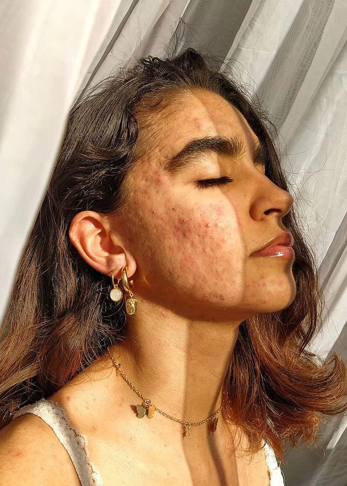
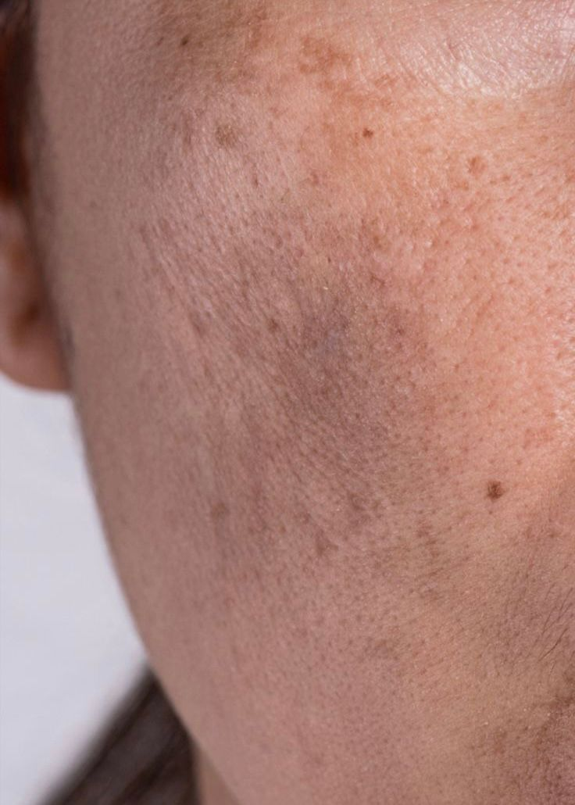

EL ACNÉ
El acné es una afección frecuente de la piel (cutánea) que ocurre cuando los folículos pilosos debajo de esta se obstruyen. La grasa y las células muertas de la piel tapan los poros y puede haber brotes de lesiones (a menudo llamados granos o espinillas). La mayoría de las veces, los brotes ocurren en cualquier zona de la cara y del cuerpo.
PIEL DE GALLINA Ó FRESA
Qué es? Es una condición crónica de la piel debido al acúmulo de queratina a nivel de los folículos pilosos que causa taponamiento e inflamación local. Presenta un componente hereditarios y es más frecuente en pacientes con piel seca o alérgicos.

PIGMENTACIÓN
Las manchas cutáneas son cambios en el color de la piel que ocurren en la piel senil. La coloración puede deberse al envejecimiento, la exposición al sol u otras fuentes de luz ultravioleta, o causas desconocidas. Las manchas cutáneas son muy comunes después de los 40 años de edad. Pero en los ultimos años presente desde los 25 años.
